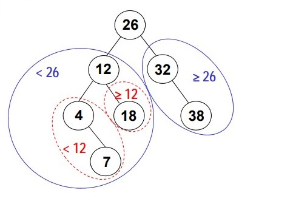
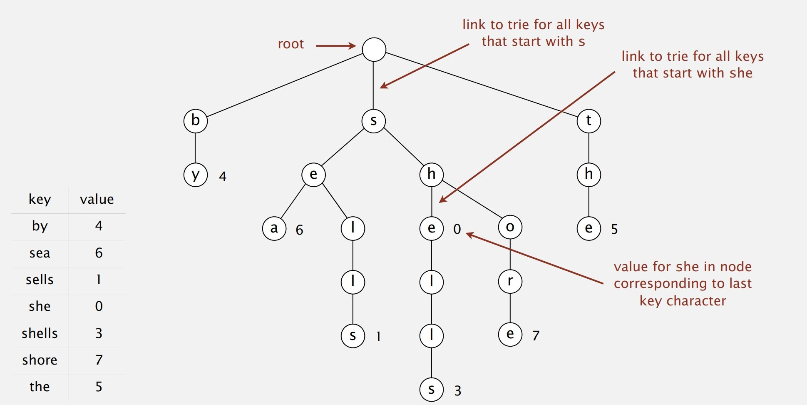
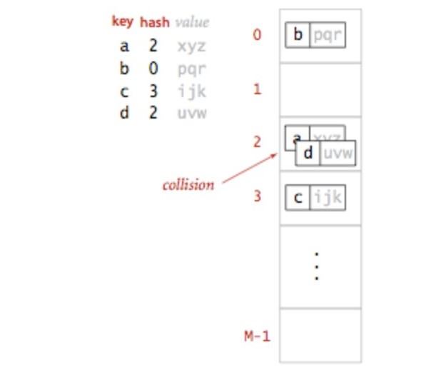
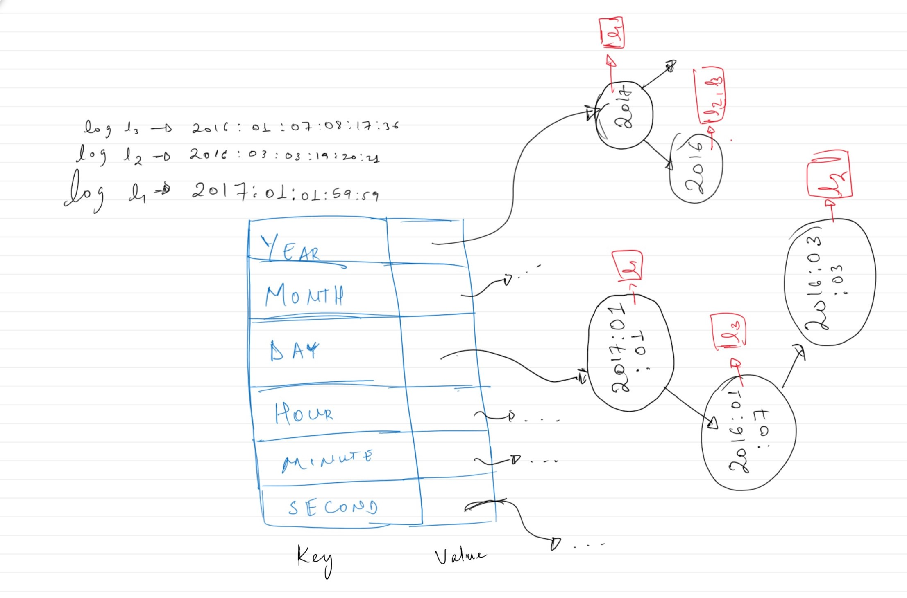
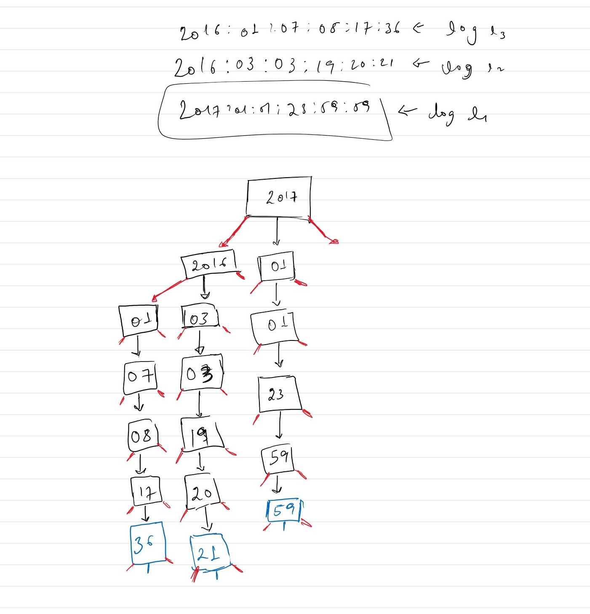

Log storage system
Data structure design, Binary search trees, Tries, Maps
Case study: Designing a log storage data structure
The goal is to design and implement a data structure that stores logs and has the following behaviors:
- It can add a single log, along with its timestamp, to the data structure. In other words, given some log and its timestamp, store the log in the data structure.
- It can return a list of logs that fall in a provided time range [Start, End]. A granularity(the time precision under consideration) is also part of the input. For example, if Start = “2017:01:01:23:59:59”, End = “2017:01:02:23:59:59”, and the desired granularity = 'DAY', then the data structure needs to expose a behavior that finds all logs with timestamps in the range of [Jan. 1st 2017, Jan. 2nd 2017].
Forget the problem a second and consider three data structures: HashMaps, Binary Search Trees and Tries.
Binary Search Trees are "binary trees" that satisfy the following property: For each node in the binary search tree N, nodes to the left of 'N' have smaller keys than N while nodes to the right of 'N' have keys that are larger than N. No operations of a BST can violate this property. This means that any point, the nodes in a binary search tree will maintain this 'sorted' structure. This unique property will be important later on. Traversing nodes in a BST "in-order" means visiting all nodes in a BST in sorted order.
Tries, structurally speaking, are also trees. However, their use is widely associated with Strings. This is because all strings are a linearly indexed chain of characters. This characteristics of strings makes them ideal to store in Tries.
The levels in a trees can be used to represent the different indices of a string. So, if trees are used to store such type of structures, they become tries. However, tries are not just limited to strings. Any other structure that exhibits similar characteristics can be stored in tries. Although there are different implementation of tries, the most space efficient implementation is using a Ternary Search Trie.
Maps are abstract data types that support, among others, the following two core operations: put(K key, V value) & get(K key). In most programming languages, Maps are implemented in more than one way. In Java, for example, the most common implementations are HashMaps(Implemented via Hash Tables), LinkedHashMaps(Implemented via Linked lists), and TreeMaps(Implemented via a type of balanced binary search trees known as red black trees).
So, how do these data structures help in solving the above problem? Forget the concept of granularities for a second. The goal would just be to design a data structure that stores logs. However, when retrieving the logs, it may help if the logs are stored in some sorted order based on their timestamps. Otherwise, the algorithm has to go through each log to see if its timestamp is in the desired range. One problem with maintaining a sorted order is that any new logs added to the data structure could potentially disrupt the sorted order and it may be costly to re-order or sort the logs every time a log is added to the data structure.
There are a few data structures that maintain their sorted order even when their content changes. A heap is one data structure that maintains its order under dynamic circumstances. However, heaps aren't that useful when performing range queries. Instead, a binary search tree is more useful here. If the collection used to store the logs is implemented using a binary search tree, then both the behaviors to add logs and retrieve a range of logs would be reasonably optimized. The key of the nodes in binary search tree used to main the sorted order can be the timestamp of the logs, and events with the same timestamp can be stored in a list in the node. Keep in mind that every circumstance is different and there may be situations where the read behavior(getting the logs) is much more important than the write(retrieving a range of logs) and vice versa. In that case, it's better to select a data structure that optimizes the desired behavior even if that means degrading the performance of the other behavior.
But how would the binary search tree based data structure deal with granularities. One way would be to store multiple copies of all the logs per granularity. In more technical terms, a hash map can map each granularity to a corresponding BST-based collection of logs whose timestamps are used to maintain the BST sort order.
This means every time a log is added to the log storage system, a new timestamp would be calculated for every granularity, and then the log, along with its corresponding timestamp, would be inserted in each of the BSTs. For example, if a log occurred at timestamp "2017:01:01:23:59:59", then the first step would be to calculate the timestamp at each granularity. This means storing six copies of the log in six BSTs at the following timestamps: '2017', '2017:01', '2017:01:01', '2017:01:01:23', '2017:01:01:23:59', '2017:01:01:23:59:59'.
Retrieving a range of logs based on the provided granularity would just be a matter of traversing a subset of the logs in the BST. The BST-based implementation of this data structure can be found here.
One interesting property of the timestamps is that the timestamp '2017:01:01:23:59:59' is just a chain of all the individual timestamps at each granularity. In other words, the timestamp '2017:01:01:23:59:59' can be written as a combination of '2017' + '01' + '01' + '23' + '59' + '59'. The original timestamp is merely an ordered sequence of timestamps at each granularity. This linear chained structure is analogous to the structural similarities between that of strings and the characters that make up the strings.
So, just like multiple strings can be efficiently stored and manipulated using Tries, multiple logs can also be stored in a Trie based on each of their timestamps. Just like the first level of the Trie represents the characters at the zeroth index of strings, the first level would similarly represent the year(or highest granularity level) of logs. The deeper into the Trie the algorithm goes, the more precise the timestamps get. With this approach, if an event occurred on "Monday October 17th 2018" and the desired granularity is 'Month', then the algorithm should look for logs that occurred in "October 17th 2018". In a similar procedure to that of a BST, retrieving a range of logs based on the provided granularity would just be a matter of traversing a subset of the nodes in the Trie. The full implementation of the Trie version of the Log Storage data structure can be found here.
